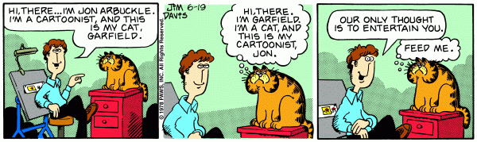
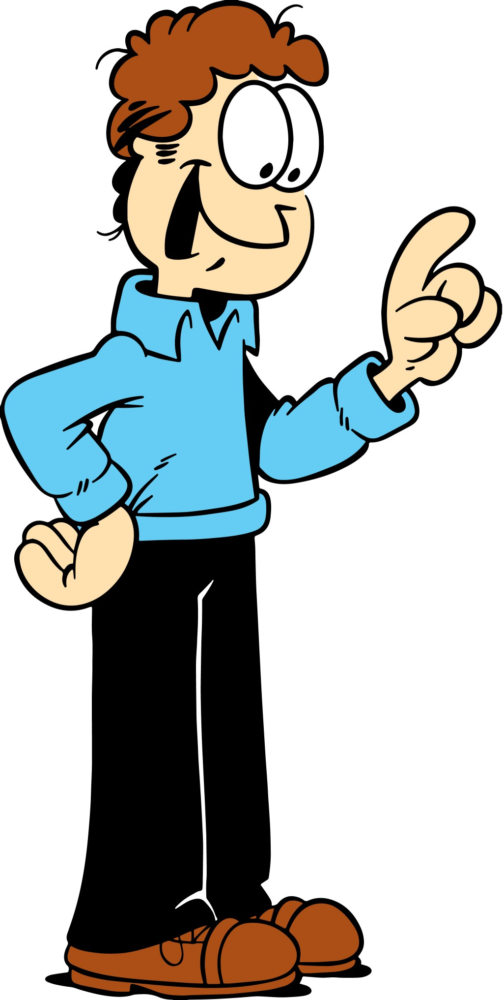

Home
This is a webpage that is all about Garfield, the best Sunday comic there ever was!
Garfield's Beginnings
First Comic Strip:
Facts About Garfield Characters
Garfield

Origins
- Birthday (Long Date): June 19, 1978
- Birthday Year:
1978
- Birthplace: Mama Leoni italian restaurant
Likes
- Lasagna
- Pizza
- Sleeping
Dislikes
- Mondays
- Mondays
- Nermal
Jon
Origins
- Birthday: July 28th, 1978
- Lives In: Muncie, Indiana
- Grew up on a farm with his mother, father, grandma, and brother, Doc Boy
- Later became a cartoonist, and shares many of his background traits with his creator, Jim Davis
Likes
- Mondays
- Playing accordian, guitar, banjo, bongos, and singing
- Favorite Color: Red
- Favorite Genre: Polka
- Decaffeinated Coffee
- Chocolate-Chip Cookies
- Unleaded Gasoline
Dislikes
- Getting Rejected By Liz
Odie
Origins
- Original Owner (According To The Comic): Lyman, Jon's old roommate
- Original Owner (According To Garfield: His 9 Lives (1984) Book): This origin owner was retconned out of the canon comic since Odie was purchased as a companion for Garfield.
- Birthday: August 8, 1978
Likes
- Mozart
- War And Peace by Leo Tolstoy
Dislikes
Sources
- https://en.wikipedia.org/wiki/Garfield